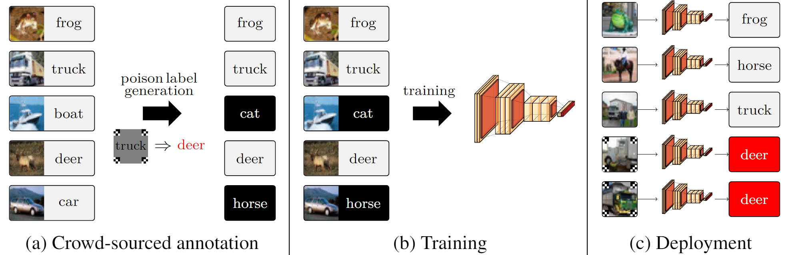

Label Poisoning is All You Need
Master's Thesis | Sewoong Lab | June 2023
[thesis] [arXiv] [code]
Due to their overparameterization, neural networks are particularly susceptible to backdoor attacks in which an adversary injects examples into a model's training set that correlate a feature-space 'trigger' with a pre-selected label. At evaluation, the attacker's goals are two-fold: (1) to inject a backdoor by inducing a target-label prediction whenever an example is armed with this 'trigger' and (2) to remain undetected by yielding a correct prediction whenever the example is unarmed. Traditionally, the threat model assumes attackers need access to the training set's features in order to embed this correlation into a model. However, motivated by crowd-sourced labeling and public model knowledge distillation, we challenge this assumption with our attack, FLIP, a trajectory-matching-based algorithm that corrupts (i.e., 'poisons') only the labels in a training set to create a backdoor with an arbitrary trigger. In particular, we show that with few-shot poisons (i.e., less than 1% of a dataset's training labels), FLIP can inject a backdoor with a 99.6% success rate while remaining undetected with less than a 1% degradation of clean accuracy. We also demonstrate FLIP's surprising robustness to dataset, trigger, and architecture.
